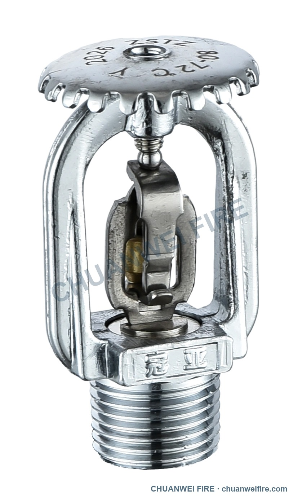
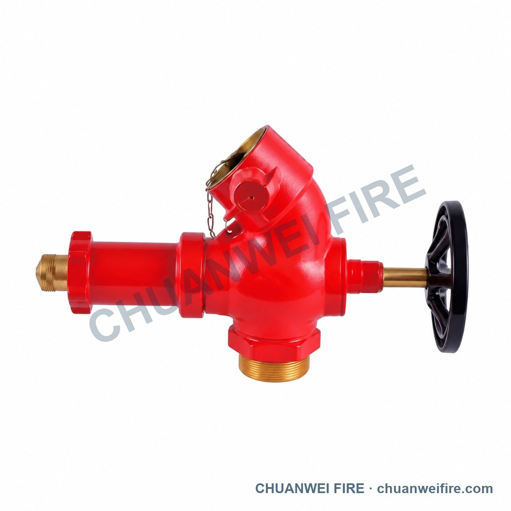
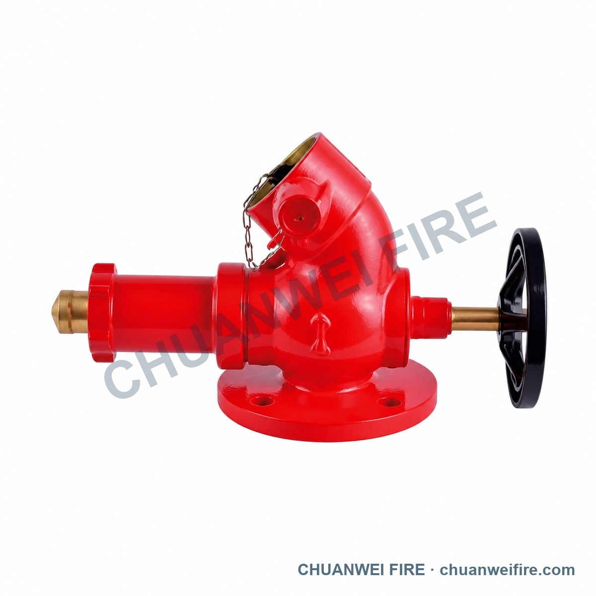
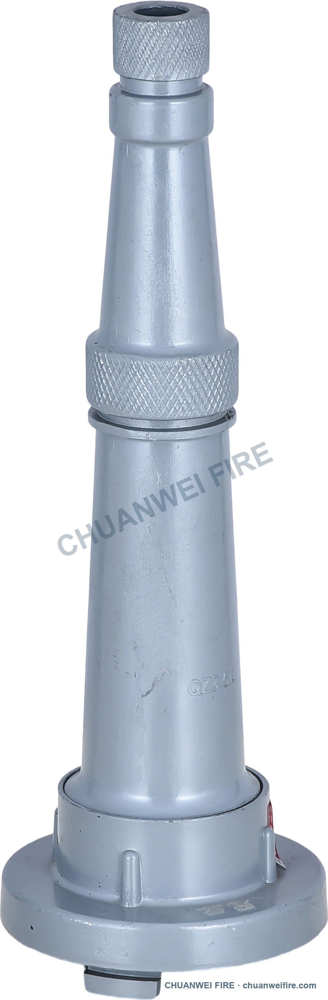
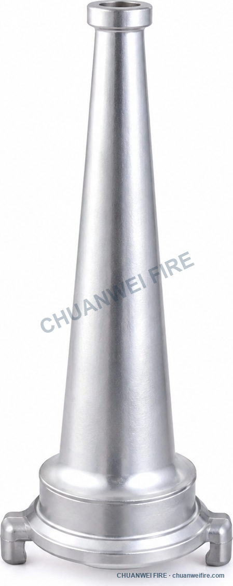

1. 易熔合金消防喷头
目录第 12 页 · 5 条型号记录 · 官网图片许可已由用户确认



本地已完成：8 款产品、16 个英阿页面、15 张产品图片。尚未发布到线上。
本页用于查看拟上线的页面与图片。15 张图片的官网使用许可已由用户确认；现有英阿公共导航与旧版发布分支存在差异，需要一并处理发布依赖。
已完成的发布候选版与验证 · 原始依赖说明 · 文件与依赖清单
目录第 12 页 · 5 条型号记录 · 官网图片许可已由用户确认

目录第 25 页 · 7 条型号记录 · 官网图片许可已由用户确认

目录第 29 页 · 5 条型号记录 · 官网图片许可已由用户确认


目录第 30 页 · 5 条型号记录 · 官网图片许可已由用户确认


目录第 35 页 · 2 条型号记录 · 官网图片许可已由用户确认


目录第 37 页 · 1 条型号记录 · 官网图片许可已由用户确认

目录第 40 页 · 2 条型号记录 · 官网图片许可已由用户确认


目录第 41 页 · 5 条型号记录 · 官网图片许可已由用户确认